carte.
A little guide to good taste.
From a menu to a taste map.
A complete design handoff for the cream-paper and ultramarine app: an offline prototype, screen exports, product copy, editable design graphs, assets and a C#/XAML starting point.
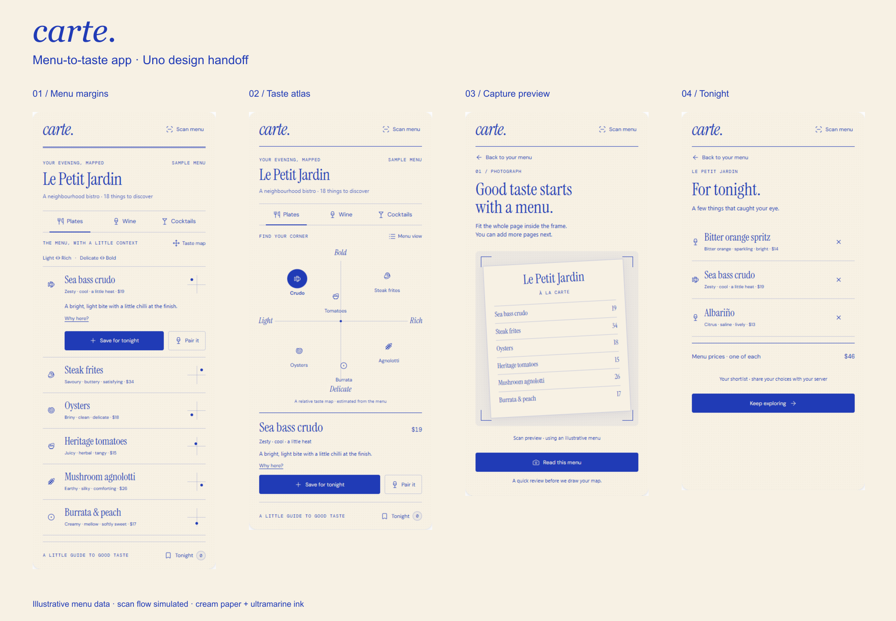
Build references
Product and behavior
Design and assets
Uno implementation
Copy
Data
Verification
Editable diagrams
Design graph

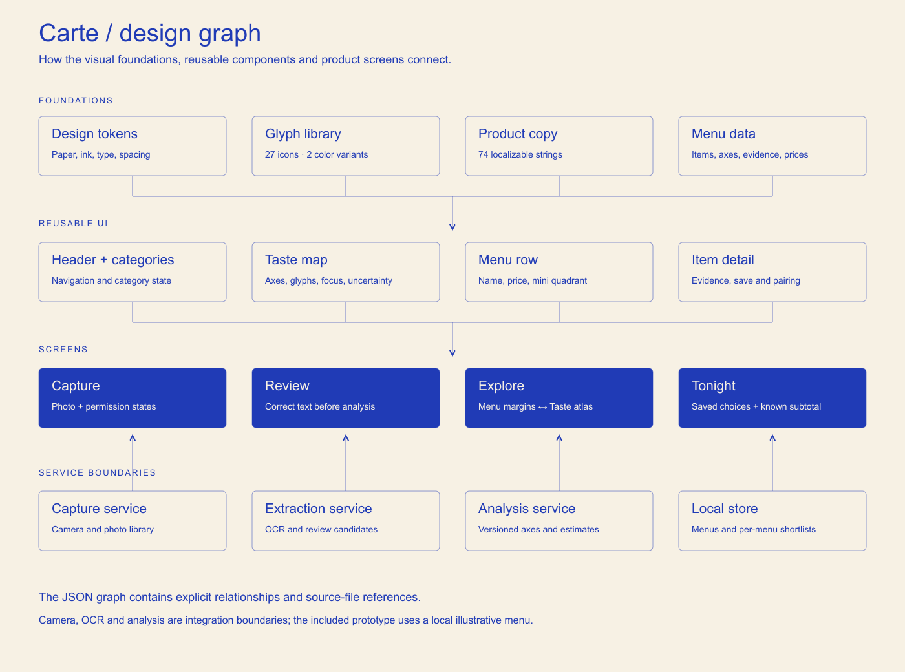
JSON · Mermaid · SVG
User flow

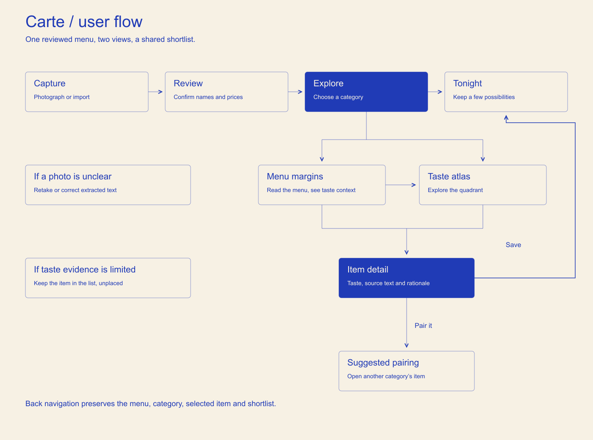
Mermaid · SVG
Screen exports
Open any image for its full-resolution 2× PNG. These are the actual HTML prototype screens.

Menu margins
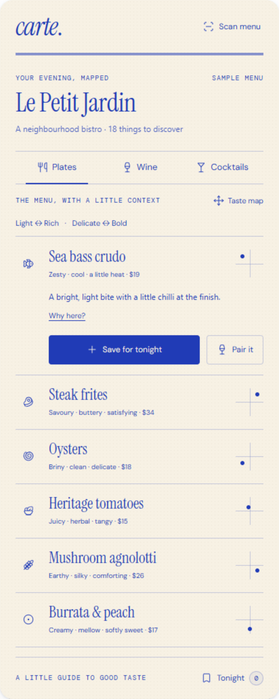

Taste atlas
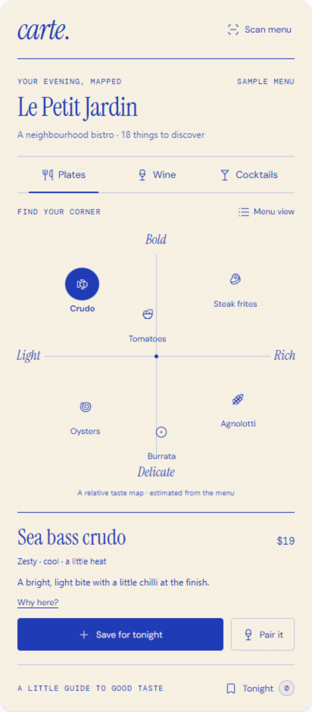

Why here
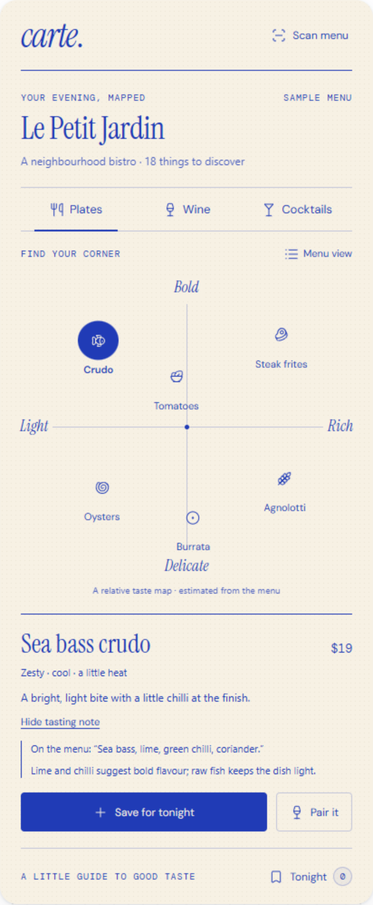

Wine axes
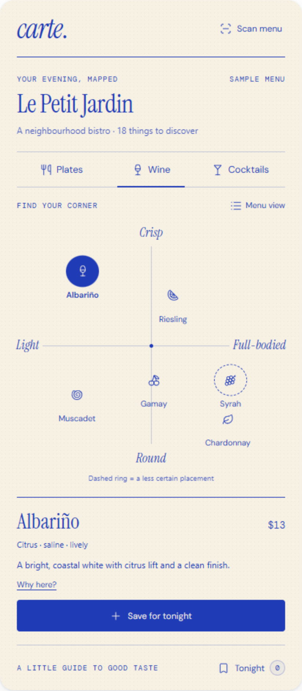

Cocktail axes
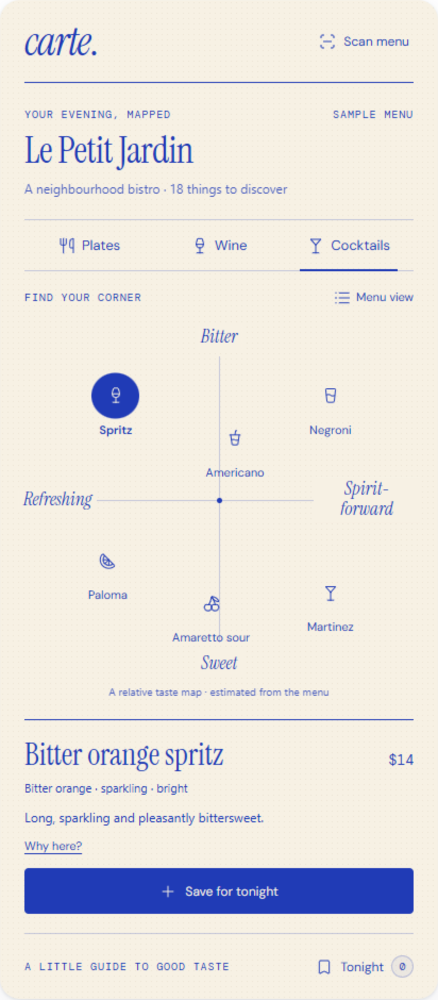

Pairing
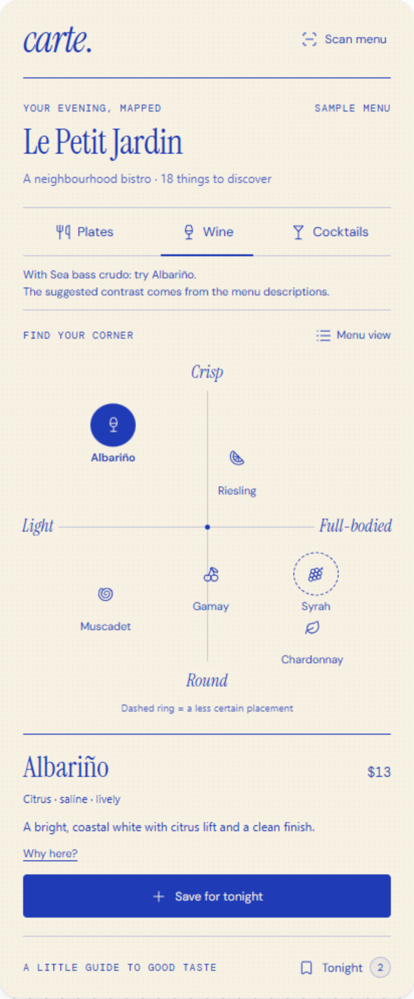

Tonight
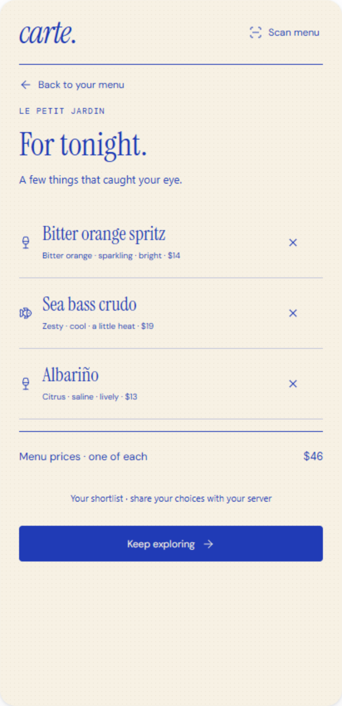

Capture preview
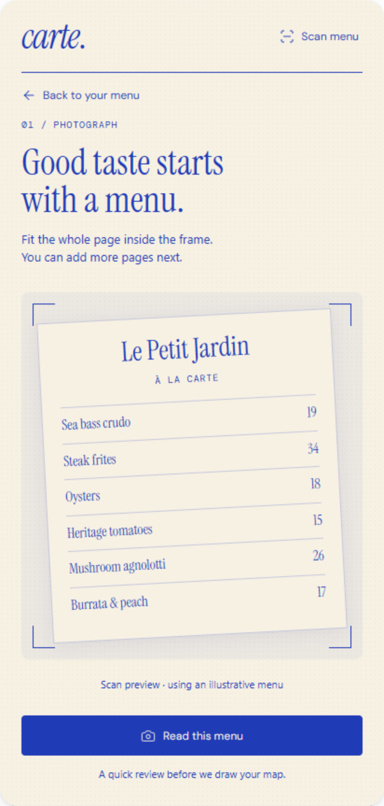

Review preview
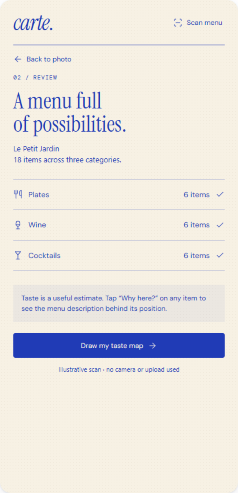
The HTML is a working interaction demo with an illustrative menu. Camera, OCR and live taste analysis are not implemented. The C# core is checked independently; the XAML remains an integration blueprint for a real Uno project.